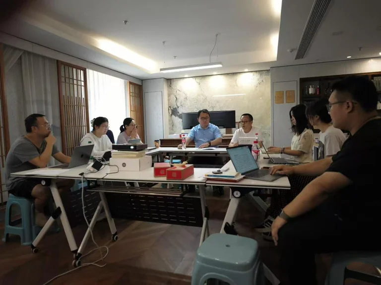

Overview
On 4 August 2026, the Center of Modern Thought, School of Social Development, Yangzhou University, organised a workshop in Rizhao, Shandong, on the significance of Robert Boyle (1627–1691) for our time, looking ahead to the 400th anniversary of his birth in 2027. The discussion addressed the second issue of Modern Philosophy, on Boyle and early modern experimental philosophy, together with peer review, publishing standards and future research. Representatives of Yangzhou University’s social sciences administration, scholars and postgraduate researchers participated.
Boyle and experimental philosophy
Li Daiwei surveyed Boyle’s life, writings and scholarship. He noted Boyle’s turn around 1649 from moral and religious writing towards experimental natural philosophy, highlighting his contribution to practices of recording, communicating and repeating experiments so that knowledge could be examined by a wider community.
Xu Yulu discussed Boyle’s dispute with Baruch Spinoza over experiments on saltpetre. The exchange raised questions about whether experiments could decisively establish a transformation in kinds of matter and how theory should inform experimental interpretation. Spinoza did not reject experiment; their disagreement concerned the relation between experiment, theory and standards of proof, rather than a simple opposition between experimentalism and pure rationalism.
Influence and the history of scholarship
Zuo Tianmeng considered the influence of Boyle’s corpuscular philosophy and theory of material qualities on Locke and Newton. Locke’s account of primary and secondary qualities drew on Boyle’s terminology and corpuscular background; the discussion also emphasised the religious concerns within Boyle’s natural philosophy. Liu Qi drew on Antonio Clericuzio’s research to show that Boyle sometimes attributed chemical properties to corpuscles, retaining a degree of explanatory autonomy for chemistry rather than reducing all chemical phenomena to mechanical properties.
Pi Liyu used Peter Anstey’s research to trace an experimental philosophical tradition from Francis Bacon through Boyle to Robert Hooke. Newton did not simply displace this tradition; he identified with experimental philosophy while transforming it through mathematical methods. Guo Yuting discussed Michael Hunter’s biography of Boyle, whose use of letters and manuscripts brings together religious belief, alchemical practice and natural inquiry, challenging an account of the scientist as a purely rational hero.
Publishing and future exchange
For the second issue of Modern Philosophy, participants proposed consistent Chinese titles and terminology for Boyle’s writings and correspondence, liaison with the publisher over overseas rights, and an emphasis on originality, scholarship and translation quality in review. They also discussed refining the editing and design established in the first issue.
The meeting highlighted Michael Hunter’s contributions to Boyle scholarship, including his work as a principal editor of the fourteen-volume Works of Robert Boyle and six-volume Correspondence of Robert Boyle. Teng Guangwei introduced developments in international Boyle research, Hunter’s scholarly career and impressions from a recent visit.
Shared conclusions
Participants agreed that commemorating Boyle should lead to sustained documentary work, translation and research. The center will continue work on the second issue, refine translation conventions and support a research community in early modern philosophy and the intellectual history of science through focused contributions and international exchange.
